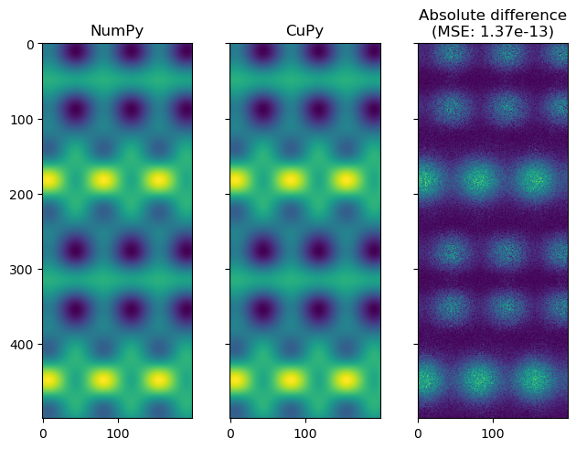

GPU Interoperability using CuPy and Tensor Spline Interpolation#
This notebook demonstrates GPU interoperability using CuPy and tensor spline interpolation. The following steps are performed: 1. Generates random data and coordinates. 2. Creates tensor splines using NumPy and CuPy. 3. Evaluates the splines on a set of coordinates. 4. Computes the absolute difference and mean square error between the NumPy and CuPy evaluations. 5. Plots the results.
[67]:
import numpy as np
import matplotlib.pyplot as plt
from splineops.interpolate.tensorspline import TensorSpline
try:
import cupy as cp
gpu_available = cp.cuda.runtime.getDeviceCount() > 0
except (ImportError, cp.cuda.runtime.CUDARuntimeError, NameError):
gpu_available = False
cp = np # Fall back to NumPy if CuPy is not available
Data type#
Need to provide floating numbers, “float64” and “float32” are typical.
[68]:
dtype = "float32"
Create random data samples and corresponding coordinates#
[69]:
nx, ny = 2, 5
xmin, xmax = -3.1, +1
ymin, ymax = 2, 6.5
xx = np.linspace(xmin, xmax, nx, dtype=dtype)
yy = np.linspace(ymin, ymax, ny, dtype=dtype)
coordinates = xx, yy
prng = np.random.default_rng(seed=5250)
data = prng.standard_normal(size=tuple(c.size for c in coordinates))
data = np.ascontiguousarray(data, dtype=dtype)
Tensor spline bases and modes#
Same basis applied to all dimensions and same mode applied to all dimensions.
[70]:
bases = "bspline3"
modes = "mirror"
Create tensor spline from NumPy data#
[71]:
data_np = data
coordinates_np = coordinates
tensor_spline_np = TensorSpline(
data=data_np, coordinates=coordinates_np, bases=bases, modes=modes
)
Create tensor spline from CuPy data for GPU computations#
Note: We first need to convert the NumPy data to CuPy.
[72]:
if gpu_available:
data_cp = cp.asarray(data)
coordinates_cp = cp.asarray(xx), cp.asarray(yy)
tensor_spline_cp = TensorSpline(
data=data_cp, coordinates=coordinates_cp, bases=bases, modes=modes
)
else:
data_cp = data
coordinates_cp = xx, yy
tensor_spline_cp = tensor_spline_np # Fallback to NumPy tensor spline
Create evaluation coordinates (extended and oversampled in this case)#
[73]:
dx = (xx[-1] - xx[0]) / (nx - 1)
dy = (yy[-1] - yy[0]) / (ny - 1)
pad_fct = 1.1
px = pad_fct * nx * dx
py = pad_fct * ny * dy
eval_xx = np.linspace(xx[0] - px, xx[-1] + px, 100 * nx)
eval_yy = np.linspace(yy[0] - py, yy[-1] + py, 100 * ny)
Evaluate using NumPy#
[74]:
eval_coords_np = eval_xx, eval_yy
data_eval_np = tensor_spline_np(coordinates=eval_coords_np)
Evaluate using CuPy#
Note: We first need to convert the evaluation coordinates to CuPy.
[75]:
if gpu_available:
eval_coords_cp = cp.asarray(eval_xx), cp.asarray(eval_yy)
data_eval_cp = tensor_spline_cp(coordinates=eval_coords_cp)
else:
eval_coords_cp = eval_coords_np
data_eval_cp = data_eval_np # Fallback to NumPy evaluation
Compute difference#
[76]:
if gpu_available:
data_eval_cp_np = data_eval_cp.get() # Convert CuPy array to NumPy array
abs_diff = np.abs(data_eval_cp_np - data_eval_np)
mse = np.mean((data_eval_cp_np - data_eval_np) ** 2)
else:
abs_diff = np.abs(data_eval_cp - data_eval_np)
mse = np.mean((data_eval_cp - data_eval_np) ** 2)
print(f"Maximum absolute difference: {np.max(abs_diff)}")
print(f"Mean square error: {mse}")
Maximum absolute difference: 1.6689300537109375e-06
Mean square error: 1.372329577449885e-13
Plot results#
[77]:
fig, axes = plt.subplots(
nrows=1, ncols=3, sharex="all", sharey="all", layout="constrained"
)
ax = axes[0]
ax.imshow(data_eval_np.T)
ax.set_title("NumPy")
if gpu_available:
data_eval_cp_np = data_eval_cp.get() # Ensure we have a NumPy array
ax = axes[1]
ax.set_title("CuPy")
ax.imshow(data_eval_cp_np.T)
else:
ax = axes[1]
ax.set_title("CuPy (not available)")
ax.imshow(data_eval_np.T)
ax = axes[2]
ax.set_title(f"Absolute difference\n(MSE: {mse:.2e})")
ax.imshow(abs_diff.T)
plt.show()
